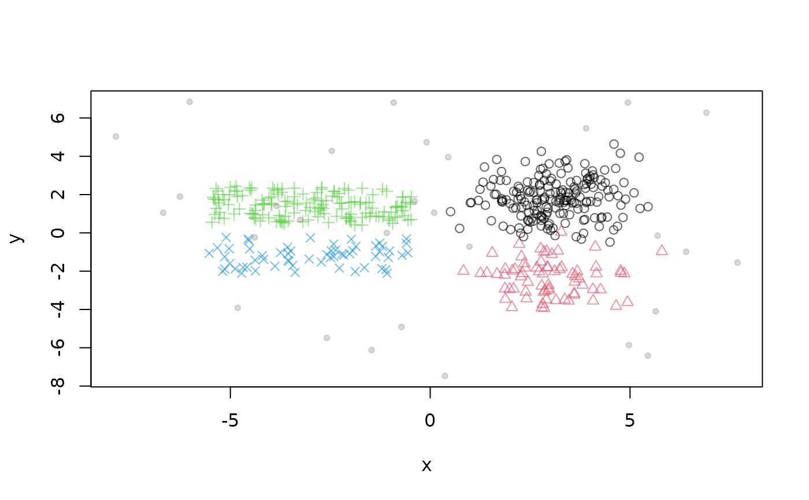
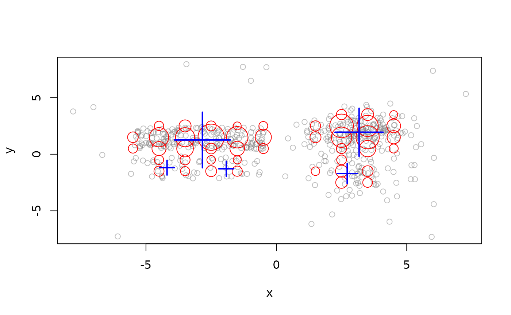
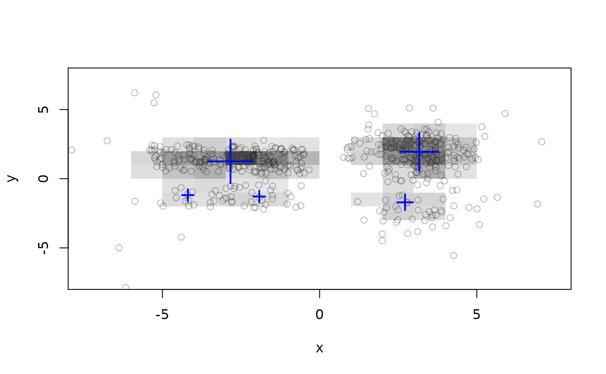
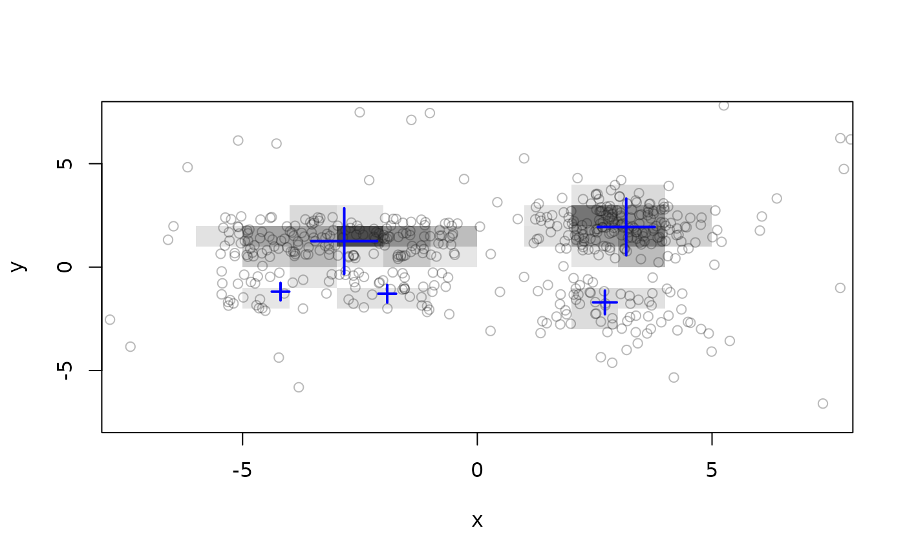
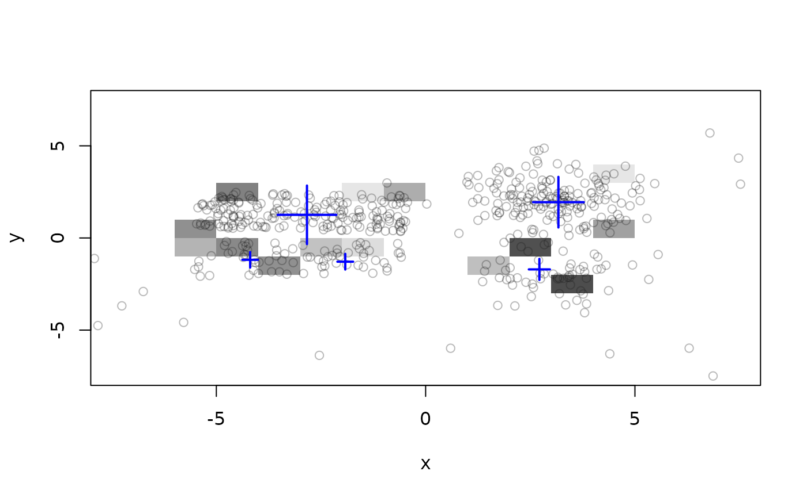
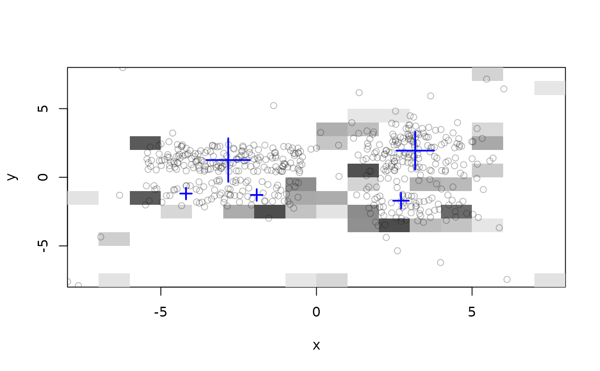
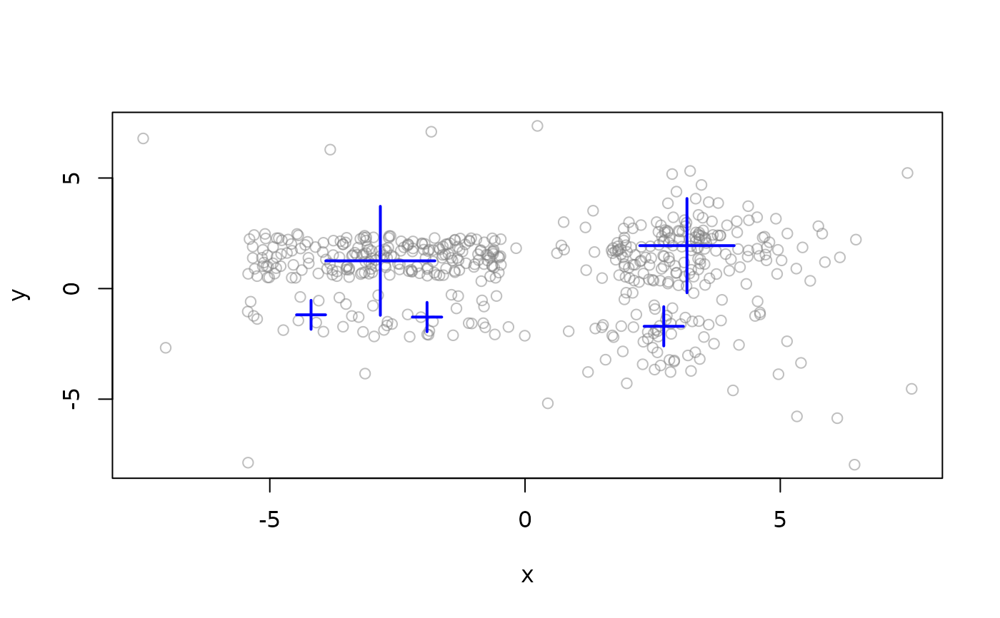
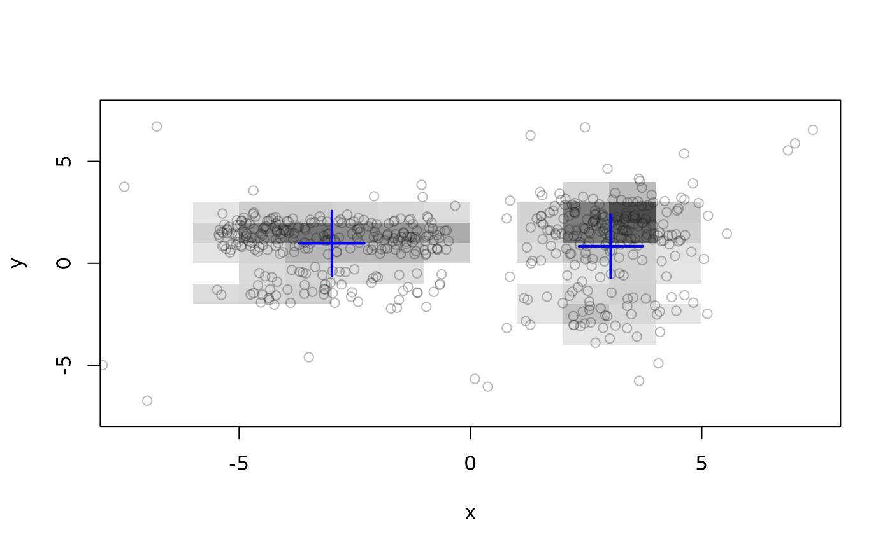

Micro Clusterer with reclustering. Implements the grid-based D-Stream data stream clustering algorithm.
Usage
DSC_DStream(
formula = NULL,
gridsize,
lambda = 0.001,
gaptime = 1000L,
Cm = 3,
Cl = 0.8,
attraction = FALSE,
epsilon = 0.3,
Cm2 = Cm,
k = NULL,
N = 0
)
get_attraction(x, relative = FALSE, grid_type = "dense", dist = FALSE)
# S3 method for class 'DSC_DStream'
plot(
x,
dsd = NULL,
n = 500,
type = c("auto", "micro", "macro", "both"),
grid = FALSE,
grid_type = "used",
assignment = FALSE,
...
)
DSOutlier_DStream(
formula = NULL,
gridsize,
lambda = 0.001,
gaptime = 1000L,
Cm = 3,
Cl = 0.8,
outlier_multiplier = 2
)Arguments
- formula
NULLto use all features in the stream or a model formula of the form~ X1 + X2to specify the features used for clustering. Only.,+and-are currently supported in the formula.- gridsize
a single number defining the size of grid cells in each dimension. For example for 3d data, the cells would be of size
gridsize x gridsize x gridsize.- lambda
Fading constant used function to calculate the decay factor \(2^-lambda\). (Note: in the paper the authors use lamba to denote the decay factor and not the fading constant!)
- gaptime
sporadic grids are removed every gaptime number of points.
- Cm
density threshold used to detect dense grids as a proportion of the average expected density (Cm > 1). The average density is given by the total weight of the clustering over \(N\), the number of grid cells.
- Cl
density threshold to detect sporadic grids (0 > Cl > Cm). Transitional grids have a density between Cl and Cm.
- attraction
compute and store information about the attraction between adjacent grids. If
TRUEthen attraction is used to create macro-clusters, otherwise macro-clusters are created by merging adjacent dense grids.- epsilon
overlap parameter for attraction as a proportion of
gridsize.- Cm2
threshold on attraction to join two dense grid cells (as a proportion on the average expected attraction). In the original algorithm
Cm2is equal toCm.- k
alternative to Cm2 (not in the original algorithm). Create k clusters based on attraction. In case of more than k unconnected components, closer groups of MCs are joined.
- N
Fix the number of grid cells used for the calculation of the density thresholds with Cl and Cm. If
Nis not given (0) then the algorithm tries to determine N from the data. Note that this means that N potentially increases over time and outliers might produce an extremely large value which will lead to a sudden creation of too many dense micro-clusters. The original paper assumed that N is known a priori.- x
DSC_DStream object to get attraction values from.
- relative
calculates relative attraction (normalized by the cluster weight).
- grid_type
the attraction between what grid types should be returned?
- dist
make attraction symmetric and transform into a distance.
- dsd
a DSD data stream object.
- n
number of plots taken from
dsdto plot.- type
Plot micro clusters (
type = "micro"), macro clusters (type = "macro"), both micro and macro clusters (type = "both"), outliers(type = "outliers"), or everything together (type = "all").type = "auto"leaves to the class of DSC to decide.- grid
logical; show the D-Stream grid instead of circles for micro-clusters.
- assignment
logical; show assignment area of micro-clusters.
- ...
further argument are passed on.
- outlier_multiplier
multiplier for assignment grid width to declare outliers.
Details
D-Stream creates an equally spaced grid and estimates the density in each grid cell using the count of points falling in the cells. Grid cells are classified based on density into dense, transitional and sporadic cells. The density is faded after every new point by a factor of \(2^{-lambda}\). Every gaptime number of points sporadic grid cells are removed.
For reclustering D-Stream (2007 version) merges adjacent dense grids to form
macro-clusters and then assigns adjacent transitional grids to
macro-clusters. This behavior is implemented as attraction = FALSE.
The 2009 version of the algorithm adds the concept of attraction between
grids cells. If attraction = TRUE is used then the algorithm produces
macro-clusters based on attraction between dense adjacent grids (uses
Cm2 which in the original algorithm is equal to Cm).
For many functions (e.g., get_centers(), plot()), D-Stream
adds a parameter grid_type with possible values of "dense",
"transitional", "sparse", "all" and "used". This
only returns the selected type of grid cells. "used" includes dense
and adjacent transitional cells which are used in D-Stream for reclustering.
For plot() D-Stream also provides extra parameters "grid" and
"grid_type" to show micro-clusters as grid cells (density represented
by gray values).
DSOutlier_DStream classifies points that do not fall into a dense grid cell as
outlier/noise. Parameter outlier_multiplier specifies
how far the point needs to be away from a dense cell to be classified as an outlier by multiplying the grid
size.
Note that DSC_DStream currently cannot be saved to disk using
save() or saveRDS(). This functionality will be added later!
References
Yixin Chen and Li Tu. 2007. Density-based clustering for real-time stream data. In Proceedings of the 13th ACM SIGKDD International Conference on Knowledge Discovery and Data Mining (KDD '07). ACM, New York, NY, USA, 133-142.
Li Tu and Yixin Chen. 2009. Stream data clustering based on grid density and attraction. ACM Transactions on Knowledge Discovery from Data, 3(3), Article 12 (July 2009), 27 pages.
See also
Other DSC_Micro:
DSC_BICO(),
DSC_BIRCH(),
DSC_DBSTREAM(),
DSC_Micro(),
DSC_Sample(),
DSC_Window(),
DSC_evoStream()
Other DSC_TwoStage:
DSC_DBSTREAM(),
DSC_TwoStage(),
DSC_evoStream()
Other DSOutlier:
DSC_DBSTREAM(),
DSOutlier()
Examples
stream <- DSD_BarsAndGaussians(noise = .05)
plot(stream)

dstream1 <- DSC_DStream(gridsize = 1, Cm = 1.5)
update(dstream1, stream, 1000)
dstream1
#> D-Stream
#> Class: DSC_DStream, DSC_Micro, DSC_R, DSC
#> Number of micro-clusters: 45
#> Number of macro-clusters: 5
# micro-clusters (these are "used" grid cells)
nclusters(dstream1)
#> [1] 45
head(get_centers(dstream1))
#> x y
#> 1 -5.5 0.5
#> 2 -5.5 1.5
#> 3 -4.5 -1.5
#> 4 -4.5 -0.5
#> 5 -4.5 0.5
#> 6 -4.5 1.5
# plot (DStream provides additional grid visualization)
plot(dstream1, stream)

plot(dstream1, stream, grid = TRUE)

# look only at dense grids
nclusters(dstream1, grid_type = "dense")
#> [1] 32
plot(dstream1, stream, grid = TRUE, grid_type = "dense")

# look at transitional and sparse cells
plot(dstream1, stream, grid = TRUE, grid_type = "transitional")

plot(dstream1, stream, grid = TRUE, grid_type = "sparse")

### Macro-clusters
# standard D-Stream uses reachability
nclusters(dstream1, type = "macro")
#> [1] 5
get_centers(dstream1, type = "macro")
#> x y
#> 1 -2.834756 1.255131
#> 2 -4.192024 -1.186004
#> 3 -1.919891 -1.287899
#> 4 2.717368 -1.705919
#> 5 3.171841 1.941804
plot(dstream1, stream, type = "macro")

evaluate_static(dstream1, stream, measure = "crand", type = "macro")
#> Evaluation results for macro-clusters.
#> Points were assigned to micro-clusters.
#>
#> cRand
#> 0.8633109
#> attr(,"type")
#> [1] "macro"
#> attr(,"assign")
#> [1] "micro"
# use attraction for reclustering
dstream2 <- DSC_DStream(gridsize = 1, attraction = TRUE, Cm = 1.5)
update(dstream2, stream, 1000)
dstream2
#> D-Stream
#> Class: DSC_DStream, DSC_Micro, DSC_R, DSC
#> Number of micro-clusters: 51
#> Number of macro-clusters: 2
plot(dstream2, stream, grid = TRUE)

evaluate_static(dstream2, stream, measure = "crand", type = "macro")
#> Evaluation results for macro-clusters.
#> Points were assigned to micro-clusters.
#>
#> cRand
#> 0.5783599
#> attr(,"type")
#> [1] "macro"
#> attr(,"assign")
#> [1] "micro"